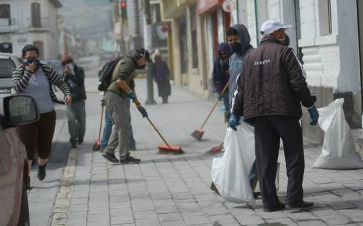

Volcanes
Volcan Popocatepetl
Por su origen náhuatl su nombre significa “montaña que humea”, por su altura es el pico más alto de México después del Pico de Orizaba, y por su cercanía con varias poblaciones humanas se le considera uno de los volcanes más peligrosos del mundo. También se le conoce como “Don Goyo” o simplemente como “Popo”. El Popocatépetl es un estratovolcán o volcán compuesto. Se le describe como un volcán activo, de hecho, el más activo de México. Descansa al sur de la Ciudad de México sobre los estados de Puebla, Morelos y México, en una provincia fisiográfica nombrada Eje Neovolcánico o Eje Volcánico Transversal, que es una cadena de volcanes que incluye al Iztaccíhuatl, al Paricutín y al Nevado de Toluca, entre otros. El Popocatépetl es un estratovolcán, el más activo de México.

Cracteristicas Del Volcan Popocatepetl
Altura Y Edad
Altura
Su altura es de 5500 msnm, es de forma cónica, tiene undiámetro de 25 km en su base y la cima es el corte elíptico de un cono y tiene una orientación noreste-suroeste. La distancia entre las paredes de su cráter varía entre los 660 y los 840 m.
Edad
una edad aproximada de 730 000 años.
Localizacion y Actividad Volcanica
Localizacion
localizado en el centro de México, en los límites territoriales de los estados deMorelos, Puebla y México. Se localiza a unos 72 km al sureste de la Ciudad de México, 43 km de Puebla, 63 km de Cuernavaca, y 53 km de Tlaxcala.
Actividad Volcanica
El Popocatépetl es conocido por sus alta actividad volcánica, que se presenta comúnmente. Desde que se reactivó, en 1997, hasta el momento, ha presentado una serie de erupciones de las cuales la más violenta ha sido la del año 2000, y la última la noche del 4 y madrugada del 5 de noviembre de 2014. El volcán es uno de los más monitoreados del mundo y también es uno de los más peligrosos y que amenaza más de 26 millones de personas.
Estados Afectados
Estados Afectados
en total serían afectadas alrededor de 150 mil personas de 18 municipios del estado, que son Ixtacuixtla, Tepetitla, Nativitas, Tetlatlahuca, Santa Apolonia Teacalco, Zacatelco, Xicohtzinco, Tenancingo, Papalotla, Acuamanala, Quilehtla, Ayometla, San Pablo del Monte, Texoloc, Zacualpan, Huactzinco, Axocomanitla y Nopalucan
Monitoreo
La única manera de percibir y evaluar el estado de actividad y riesgo asociado de un volcán, es a través de la observación y vigilancia sistemática mediante diversos métodos visuales e instrumentales. Si estos se aplican en forma anticipada en las fases previas a un proceso eruptivo, es posible, en la mayoría de los casos, detectar oportunamente un cambio cualitativo y cuantitativo de la actividad que inclusive pudiese conducir a una predicción en el corto plazo de un proceso eruptivo inminente y poner en marcha, de parte de las autoridades de Protección Civil el plan de emergencia previamente establecido.
Una muestra de un sistema de vigilancia y monitoreo oportunamente establecido es el del volcán Popocatépetl. En un esfuerzo conjunto del Centro Nacional de Prevención de Desastres (CENAPRED), de la Secretaría de Gobernación, los Institutos de Geofísica y de Ingeniería , de la UNAM , y con la colaboración del Cascades Volcano Observatory, del U.S. Geological Survey, se estableció en los últimos años un complejo sistema de observación telemétrico con una central de adquisición y procesamiento de datos.
Cuatro tipos de monitoreo se han establecido en el volcán: visual, sísmico, geodésico y geoquímico, de los cuales el más importante es el sísmico. La red de monitoreo del Popocatépetl está compuesta por 15 estaciones localizadas en las laderas circundantes del volcán en sitios con altitudes de hasta 4300 m y a 1.5 km del cráter. La instrumentación consta de 8 sismógrafos triaxiales de periodo corto, 4 de banda ancha, 4 inclinómetros biaxiales para medir deformación, una cámara de video con enlace de microondas, un radar doppler meteorológico y diversos equipos para mediciones geodésicas, análisis químicos y determinación de las concentraciones de gases SO2 y CO2. Más de 50 señales de telemetría son trasmitidas en forma continua hacia un puesto central de registro y procesamiento localizado en el CENAPRED. Allí y mediante una extensa red de computadoras, la actividad es monitoreada y procesada las 24 horas del día.
Prevencion
Caida de Ceniza
No se asuste, las cenizas son más molestas que dañinas Permanezca en el interior.
Si se encuentra en el exterior, busque refugio y use mascarilla o pañuelo para protegerse del polvo. No existe riesgo de gases tóxicos a pesar del olor. Encienda la radio y procure informarseEn el hogar:
Cubra toda abertura el exterior
Coloque toallas húmedas donde haya corrientes de aire, así como en los umbrales de las puertas
No encienda ventiladores ni secadoras de ropa
Quite la ceniza de los canales y techos para evitar acumulaciones
Si la fuente de agua tiene un sabor u olor ácido, utilice la almacenada en el calentador o en el tanque del inodoro. Para purificar el agua debe hervirla.
No existe peligro alguno en comer verduras y frutas del jardín, siempre y cuando las lave primero
No use jabón, se impregna de ceniza; use detergente en su lugar
En su automóvil:
No conduza a menos que sea absolutamente necesario
Si tiene que hacerlo, hágalo despacio. La ceniza reduce la visibilidad, así que mantenga una distancia de seguridad adecuada con el coche que va delante de usted.
Si el automóvil se para, sáquelo de la carretera para evitar accidentes y manténgase en el interior.
Erupcion Volcanica
Manténgase alejado de la ceniza volcánica
No conduzca a través de ella, daña los vehículos
Si tuvo que evacuar su hogar y al volver encuentra ladrones saqueándolo, no se enfrente a ellos. Pida ayuda.
Hierva el agua que vaya a beber.
Encienda la radio o televisión de su kit de emergencias para obtener noticias y posibles instrucciones
Si padece alguna dolencia respiratoria, no salga de su hogar hasta que se confirme que no hay riesgo.
Limpie la ceniza de los techos, puesto que pesa y puede provocar derrumbes
Revise con precaución si funcionan luz, agua, gas y teléfono
Ayude a las personas heridas o que han quedado atrapadas. Pida ayuda a los servicios de emergencia